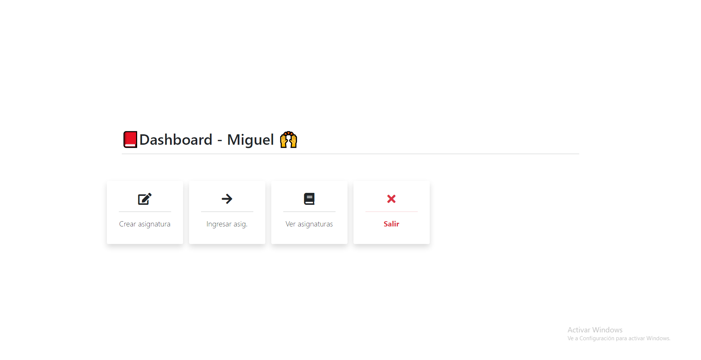
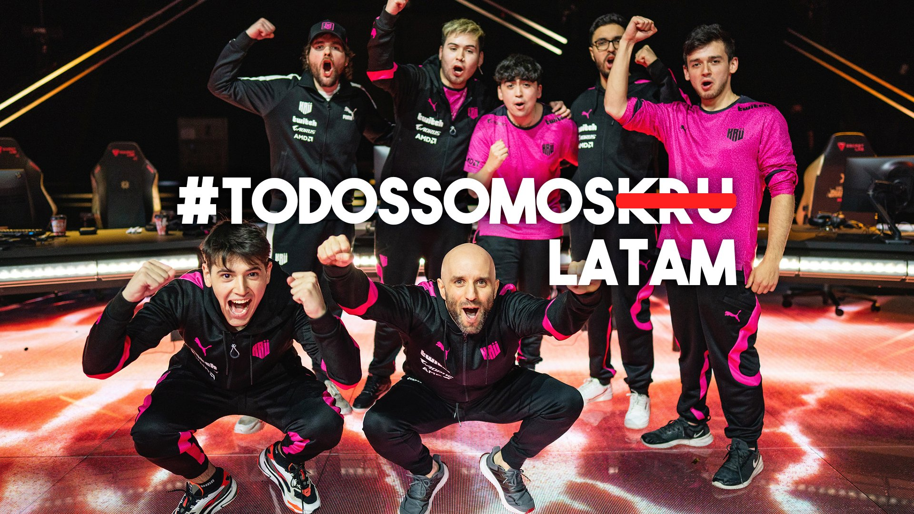

Backend developer proyectos, encontrar mi resumen aqui
Software skils
Competentes en: Javascript, Node.js, HTML5, CSS, C#.
Trabajé en: React.js, Amazon Web Services.
Intereses en: Mobile Dev, Al, Graphics, UI Research.
Contactame en silvamiguelangel02@outlook.com o LinkedIn
Más información aquí
Web Application - educAR
Node.js Boostrap 5
El objetivo de esta aplicación web fue basarse en la pagina oficial CLASSROM, y poder llegar a replicar toda su lógica detrás y llegar armar una aplicación completa. Fue un proyecto realizado en mi etapa estudiantil en la materia "PRACTICAS PROFESIONALIZANTES" como Técnico en Computación.
Chrome extension - KRÜ esports
Javascript Api twitch
El objetivo de este proyecto es notificar los partidos y transmisiones del equipo deportivo KRU SPORT. Usando la API de contracción. Disponible solo para navegadores Chrome.
Bot para discord - tournamentTYRAKZ
Javascript Api discord
El objetivo del BOT fue crear un sistema de registración avanzado ambientado para torneos competitivos, donde sus equipos puedan tener canales de voz personalizados y exclusivos para ellos.
Bot para telegram - RBM Bussines
Javascript Api telegram
El objetivo del BOT fue automatizar un registro de usuarios que iniciaba y finalizaba sin presencia de un humano, donde en ese intervalo de tiempo los usuarios mediante un comando se registraban a la lista. Esto permitiría ahorrar personal.
Web Scraping - Scraping precio de compragamer
Javascript
El objetivo del BOT fue crear un aviso personalizado mediante la herramienta webScraping. Donde uno seleccionara los productos que desee y por vía Telegram le avisara cuando este en stock, sin stock, o si bajo de precio.

Email marketing - Cooler Master
HTML Boostrap 5
El objetivo de este email marketing es mostrar los nuevos productos que salieron a la venta.

Static page - Landing page para un abogado
HTML CSS
Pagina sencilla para un estudio juridico.